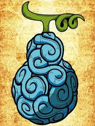

Tipos de Akuma no Mi
- Paramecia
- Concede diferentes tipos de habilidades especiais.
- Zoan
- Permite transformar-se em um animal ou criatura.
- Logia
- Permite criar, controlar e transformar-se em determinado elemento.



Exemplos
- Gomu Gomu no Mi
- Ope Ope no Mi
- Mera Mera no Mi
- Hito Hito no Mi
- Yami Yami no Mi
Regra importante
Usuários de Akuma no Mi normalmente perdem a capacidade de nadar.